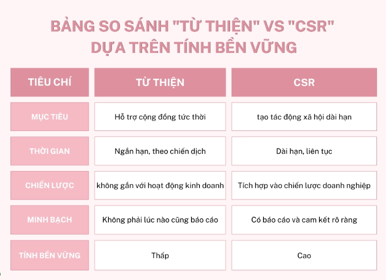

1. Dẫn nhập
Trong nhiều năm, khi nhắc đến trách nhiệm xã hội của doanh nghiệp (Corporate Social Responsibility – CSR), nhiều người thường liên tưởng đến các hoạt động từ thiện như quyên góp tiền, tặng quà cho người nghèo hoặc tài trợ cho các chương trình cộng đồng. Tuy nhiên, trong bối cảnh kinh doanh hiện đại, CSR đã vượt xa phạm vi của các hoạt động thiện nguyện đơn lẻ. CSR ngày nay được xem như một chiến lược phát triển bền vững, trong đó doanh nghiệp chủ động tạo ra tác động tích cực cho xã hội, môi trường và các bên liên quan. Vì vậy, câu hỏi đặt ra là: CSR khác gì so với hoạt động từ thiện truyền thống, và liệu CSR có thực sự mang tính "tự nguyện" trong bối cảnh áp lực từ người tiêu dùng hiện nay hay không?
2. Lý thuyết CSR hiện đại
Khái niệm CSR bắt đầu được định hình rõ ràng từ công trình của Howard R. Bowen (1953). Bowen cho rằng: "CSR là nghĩa vụ của các doanh nhân trong việc theo đuổi các chính sách, đưa ra các quyết định hoặc thực hiện các hành động phù hợp với mục tiêu và giá trị của xã hội."
Định nghĩa này đặt nền tảng cho việc nhìn nhận doanh nghiệp không chỉ là một tổ chức tạo ra lợi nhuận mà còn phải cân nhắc đến các giá trị xã hội rộng lớn hơn. Theo các quan điểm CSR hiện đại, doanh nghiệp được kỳ vọng tạo ra tác động tích cực đến xã hội, môi trường và các bên liên quan, đồng thời thực hiện những hoạt động vượt lên trên các nghĩa vụ pháp lý tối thiểu.
Điểm quan trọng là CSR không đồng nghĩa với từ thiện. Hoạt động từ thiện thường mang tính ngắn hạn, xuất phát từ thiện chí hoặc hình ảnh cá nhân của doanh nghiệp. Ngược lại, CSR được tích hợp vào chiến lược kinh doanh dài hạn, hướng đến tính bền vững, trách nhiệm và sự minh bạch trong toàn bộ hoạt động của doanh nghiệp.
3. Phân tích case: Vinamilk và "Quỹ sữa Vươn cao Việt Nam"
Một ví dụ tiêu biểu tại Việt Nam là chương trình "Quỹ sữa Vươn cao Việt Nam" của Vinamilk. Chương trình này được triển khai từ năm 2008 với mục tiêu cung cấp sữa dinh dưỡng cho trẻ em có hoàn cảnh khó khăn trên khắp cả nước.
Nếu nhìn bề ngoài, đây có thể được xem là một hoạt động từ thiện vì doanh nghiệp tặng sản phẩm cho trẻ em nghèo. Tuy nhiên, khi phân tích sâu hơn, có thể thấy chương trình này mang đầy đủ đặc điểm của CSR hiện đại.
Thứ nhất, chương trình được duy trì lâu dài và có quy mô quốc gia, thay vì chỉ là hoạt động ngắn hạn. Điều này cho thấy sự cam kết bền vững của doanh nghiệp đối với cộng đồng.
Thứ hai, Vinamilk minh bạch về nguồn lực và kết quả chương trình, thường xuyên công bố số lượng hộp sữa được trao tặng và số trẻ em được hưởng lợi. Sự minh bạch này góp phần xây dựng niềm tin với xã hội.
Thứ ba, chương trình cũng gắn với giá trị cốt lõi của doanh nghiệp trong lĩnh vực dinh dưỡng và sức khỏe, qua đó tạo ra tác động xã hội phù hợp với năng lực và sứ mệnh kinh doanh của công ty.
Như vậy, hoạt động này không chỉ dừng lại ở việc "cho đi" mà còn góp phần cải thiện dinh dưỡng cho trẻ em Việt Nam, đồng thời củng cố hình ảnh thương hiệu của doanh nghiệp theo hướng tích cực và có trách nhiệm.
4. Phản tư: CSR có thực sự "tự nguyện"?
Mặc dù CSR thường được mô tả là hoạt động mang tính tự nguyện, nhưng trong thực tế hiện nay, doanh nghiệp phải đối mặt với nhiều áp lực từ xã hội. Người tiêu dùng ngày càng quan tâm đến các vấn đề như môi trường, đạo đức kinh doanh và trách nhiệm với cộng đồng. Sự phát triển của mạng xã hội cũng khiến mọi hành vi của doanh nghiệp trở nên minh bạch hơn.
Trong bối cảnh đó, nếu doanh nghiệp không thực hiện CSR, họ có thể đối mặt với rủi ro về danh tiếng, sự tẩy chay của người tiêu dùng hoặc mất lợi thế cạnh tranh. Vì vậy, CSR tuy mang tính tự nguyện về mặt pháp lý nhưng trên thực tế lại trở thành một kỳ vọng xã hội mạnh mẽ.
5. Kết luận
CSR trong bối cảnh hiện đại không đơn thuần là các hoạt động từ thiện mang tính ngắn hạn. Thay vào đó, CSR là một chiến lược dài hạn nhằm tạo ra giá trị bền vững cho xã hội, môi trường và doanh nghiệp. Thông qua trường hợp của Vinamilk với chương trình "Quỹ sữa Vươn cao Việt Nam", có thể thấy CSR không chỉ là hành động thiện nguyện mà còn là sự cam kết lâu dài và minh bạch trong việc tạo ra tác động tích cực cho cộng đồng. Dù được xem là hoạt động "tự nguyện", CSR ngày nay đã trở thành một yếu tố thiết yếu giúp doanh nghiệp đáp ứng kỳ vọng của xã hội và phát triển bền vững trong môi trường kinh doanh hiện đại.
6. So sánh "Từ thiện" vs "CSR" dựa trên tính bền vững
